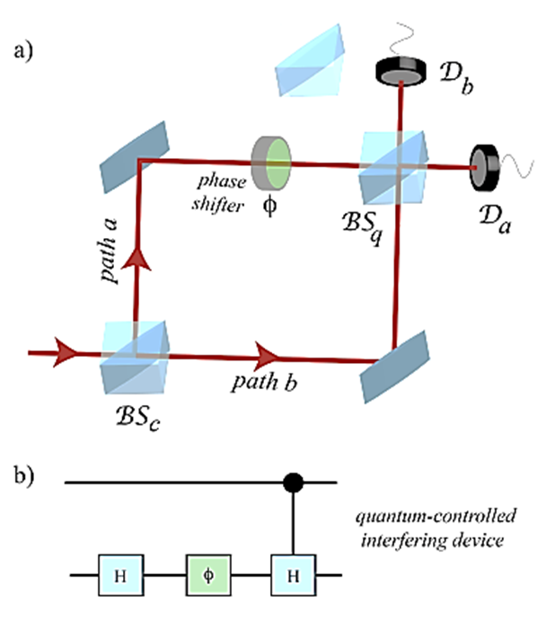

Module 3 - Photonic Qubit Processing
As discussed in previous modules, the qubit in photonic computing is a photon, the smallest excitation of the electromagnetic field. In this module, we will learn how this photon can be manipulated to obtain different qubit operations.
Quantum States of a Photon
Similar to other types of Qubits, photons can be represented as vectors indicating the state of a photon in the infinite state space. Some examples of photon state representation are:
- Photon Polarization
- Spatial Modes
- Time bins
Polarization Qubit
Let’s look at one way of representing information in photons: polarization. Classically, light is understood as a part of the electromagnetic spectrum. This can be visualized as a synchronous oscillation of electric and magnetic fields.
Polarization of an electromagnetic field can be visualized as synchronous oscillations of electric and magnetic fields. These are always mutually perpendicular to each other. For example, in the image below, the E and B represent electric and magnetic fields oscillating perpendicular to the direction of propagation of light.
We can represent polarization states as vectors similar to qubit states. For Qubits, we use states 0 and 1. For polarization, we can use states horizontal (H) and vertical (V).
|Q⟩ = α |0⟩ + β |1⟩
|P⟩ = α |H⟩ + β |V⟩
Here α and β are the probability amplitudes of measuring the photon in either of the polarizations. This method is called polarization encoding of Qubit.
Spatial Mode Qubit
Spatial mode of photons can be classically seen as the superposition of photons in different modes. For example, a spatial mode can be represented as:
|Q⟩ = α |0⟩ + β |1⟩
|S⟩ = α |0,1⟩ + β |1,0⟩
Where |0,1⟩ and |1,0⟩ are two orthonormal spatial modes. It should be noted that both polarization and spatial mode represent the same photon only in different basis space. Spatial-mode qubits would not be very practical for transmitting quantum information since the phase between |0 and |1 is easily randomized by different environments acting on the different modes.
In the figure provided, we can see the photons being split into two paths and combined using a beam splitter and mirrors. This device is commonly known as an interferometer and is a key concept in many quantum photonic circuits. The photon exists in a superposition of path a and path b.
Time bin Qubit
In this type of qubit encoding, the photons are considered to be in a superposition of mode of different time slots. These time slots can be seen as two different emission times or two different detection times of the photon.
Thus, similar to other encodings, we assign a state to two different time-stamps in a system and a photon can be written as
|T⟩ = α |0⟩ + β |1⟩
Where the states 0 and 1 are specific time stamps where a photon detection is made. In the conceptual diagram here, we can see generation of time encoded photons as a “variable coupler” splits photons into two different paths with different lengths and the photons arrive at different times in the output.
Single Photonic Qubit gates
Photonic gates are operations of qubits which alter the state of superposition. This can cause a change in polarization or time delay or the phase(imaginary component) of a qubit. A gate in terms of hardware is a transformation of a system state. Some popular transformation components used in photonic computing are:
- Phase shifting
- Beam splitter
- Polarization rotation
- Polarizing beam splitter
- Interferometer
Phase shifting
This operation changes the phase of the EM field associated with a photon. Phase of an electromagnetic wave is dictated by the wave equation w.r.t space and time.
In simple terms, a phase shift can simply be achieved by modifying the path length of light. For example in the diagram shown here, two waves reach the end with different phases as the medium causes the lower wave to slow down with respect to the top wave.
Mathematically, this amounts to a change in φ associated with the qubit state in the Bloch sphere. It can be seen as a rotation around the y-axis.
|S⟩out = εiζ|S⟩in
Practically, phase shifting can be achieved with components such as optical fibers, waveguides and any transparent material with defined length and refractive index.
In the diagram shown here, the authors are achieving phase shift by using a heating element on top of the material slab (Si-WG). This heating changes the refractive index and thus changes the phase at the output w.r.t situation where no heating was applied.
Beam Splitter
As the name suggests, a beam splitter is a simple device which separates beams. For Qubit processing it modifies the spatial mode of a qubit by changing the probability amplitudes.
A simple beam splitter is a partially reflecting mirror which reflects or transmits photons with some probability. These operations can transform both the phi and theta of the state in the Bloch sphere. This happens because the operation of reflection causes phase shift and the partial transmission changes the theta.
Practically, a beam splitter can be realized using special mirrors. In integrated circuits, beam splitters are ingeniously created using waveguides (light paths in circuits) where the circuit design forces splitting of light.
The figure here shows an integrated photonic circuit which can act as a hadamard gate. The Qubit here are represented in terms of modes of the device geometry and are modified spatially.
Polarization Rotation
Similar to phase shifting components which change the phase of spatial mode qubits, polarization rotation components rotate the Phi for polarization Qubits. Practically, a polarization rotation can be obtained with components such as wave plates. Wave plates can change the polarization direction and type. The gate operation is a rotation about the y-axis.
Polarizing Beam Splitter
As you can already guess, a polarizing beam splitter splits incident photons into two orthonormal polarization states. Similar to a spatial beam splitter, it can be used as a qubit operator to modify both the theta and phi of a photon.
Interferometer
An interferometer is a device which can take a set of states and output another set of states. A simple interferometer can be constructed with beam splitters and phase shifters.
In the figure here, we can see a mach-zehnder interferometer being built using two beam splitter (BS), two mirrors (M), one phase shifter (φ), and two detectors (D). This device can be extended to do tomography of the input state. However, the conceptual details of this processing have already been covered in QBronze.
Entanglement
Entanglement is one of the phenomena that differentiates quantum computers. As such, it’s important for a hardware platform to explore entangled qubit processing. Similar to single photon Qubit encoding, entangled photons can also be in many state spaces. Following are some examples:
- Polarization entanglement
- Mode/Momentum entanglement
- Time-energy entanglement
KLM Protocol
The KLM Protocol is a popular and important protocol in linear Quantum optical computing. Since photon - photon interaction and entanglement are very difficult to obtain, the KLM protocol relies on measurement and teleportation schemes to obtain entangled photonic qubits.
The KLM protocol uses photons in number state. Previously, we have only described polarization, spatial and time bin qubits. However, an interesting representation of photons is in terms of fock states. Simply put, fock states represent the number of photons in a state. Thus a qubit with fock state |2> will be measured as two photons, |1⟩ as one photon and |0⟩ represents no photons or vacuum state.
Thus an arbitrary state can be represented as: |Ψ⟩ = α |0⟩ + β |1⟩ + γ |2⟩.
Let’s now look at the schematic representation of KLM protocol. The protocol below will try to create a controlled Z gate. This gate will flip the sign of amplitude of |1⟩ if controlling qubit is |1⟩.
This protocol uses an NS gate. This is not a standard gate in quantum computing and is just a name used to describe a part of the circuit.The NS gate consists of three qubits: one qubit to flip and two qubits to assist. These states interact through three beam splitters. When the beam splitters are designed specifically, the NS gate changes the sign of the state.
|in⟩ = α |0⟩ + β |1⟩ + γ |2⟩
|out⟩ = NS |in⟩ = α |0⟩ + β |1⟩ - γ |2⟩
Note that this sign change is not always guaranteed. There is only a 25% chance that the NS gate flips the sign. This is because the sign change is guaranteed only when the the two assisting photons are measured in state |1⟩ and |0⟩ respectively.
We can now use this NS gate on a system with two Qubits: qubit 1 and qubit 2. We write down the operations below:
Initial state:
Q1 = α |0⟩q + β |1⟩q = α |01⟩ + β |10⟩
Q2 = γ |0⟩q + δ |1⟩q = γ |01⟩ + δ |10⟩
After the first Beam Splitter:
After Two NS gates:

After the second beam splitter:
Thus, this gate is able to flip the sign of second qubit only when state of first qubit is |1⟩. It should be noted that this gate has a 1/16 chance of success. For all other instances when the assisting photons are not |1⟩ and |0⟩, the gate fails. However, in photonics, the failure can be detected very accurately, and this creates possibilities for developing techniques like teleportation and error correction to still achieve large scale quantum photonic computing.
Conclusion
In this module we discovered how to connect the hardware of photon manipulation to qubit operation. We learnt about a few ways in which photons can carry information and also detailed simplified photonic qubit gates to serve as building blocks of PQC.
It should be kept in mind that the challenges of universal quantum computing require way more complex and ingenious engineering of these hardware blocks. However, with one step at a time we can learn something new everyday!